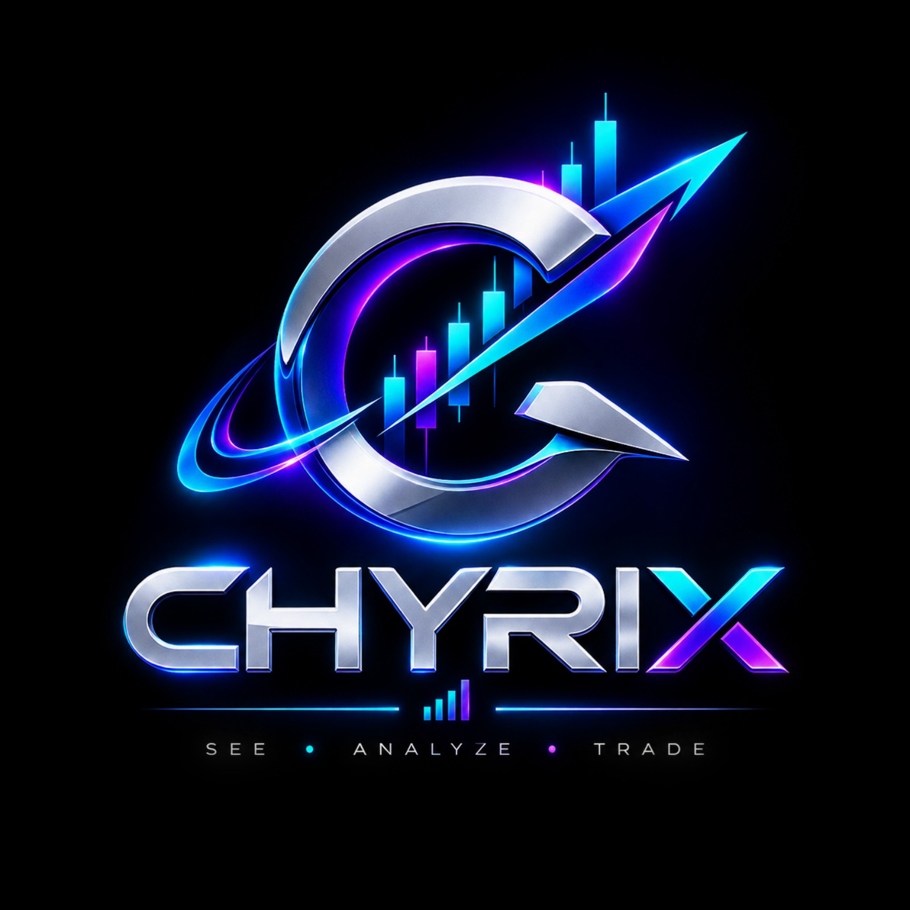

Chyrix AIChyrix Vision Intelligence
Chart Analysis
5M · Uploaded chart
WAIT
85/100Decision Quality
StructureBullish
Key LevelsClear
MomentumMixed
◎Market Context
TrendBullish
PatternsNo clear pattern confirmed
Supply & DemandDemand area visible
Risk ContextWait for confirmation
Analysis is based only on visible chart evidence. Chyrix does not guarantee future price movement.